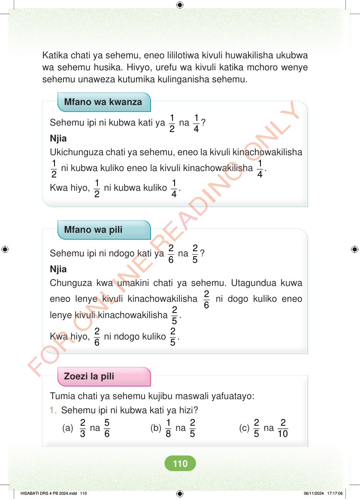

Katika chati ya sehemu, eneo lililotiwa kivuli huwakilisha ukubwa wa sehemu husika. Hivyo, urefu wa kivuli katika mchoro wenye sehemu unaweza kutumika kulinganisha sehemu. Mfano wa kwanza Sehemu ipi ni kubwa kati ya 1 2 na 1 4 ? Njia Ukichunguza chati ya sehemu, eneo la kivuli kinachowakilisha 1 2 ni kubwa kuliko eneo la kivuli kinachowakilisha 1 4 . Kwa hiyo, 1 2 ni kubwa kuliko 1 4 . Mfano wa pili Sehemu ipi ni ndogo kati ya 2 6 na 2 5 ? Njia Chunguza kwa umakini chati ya sehemu. Utagundua kuwa eneo lenye kivuli kinachowakilisha 2 6 ni dogo kuliko eneo lenye kivuli kinachowakilisha 2 5 . Kwa hiyo, 2 5 . 6 ni ndogo kuliko 2 Zoezi la pili Tumia chati ya sehemu kujibu maswali yafuatayo: 1. Sehemu ipi ni kubwa kati ya hizi? (a) 2 5 na 2 10 3 na 5 6 (b) 1 8 na 2 5 (c) 2 HISABATI DRS 4 PB 2024.indd 110 HISABATI DRS 4 PB 2024.indd 110 06/11/2024 17:17:06 06/11/2024 17:17:06